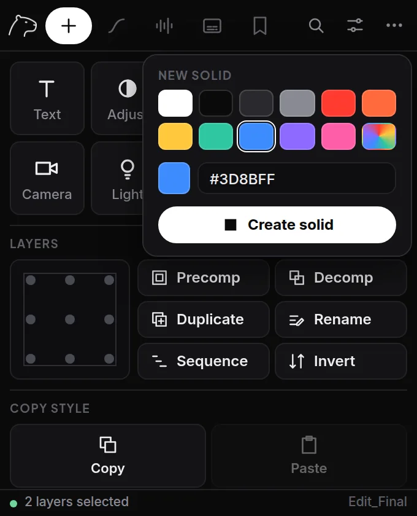

Create
In a tall window, the first tab holds everything you do with layers: new layers at the top, then the Layers tools, then Copy style. In a small window, Layers and Copy style get their own tabs again (after Curves and Beat), and the buttons grow to fill the panel.
- Select a layer in your timeline (optional).
- Click a tile: Text, Adjust, Null, Shape, Camera or Light. The new layer lands right above the selected one, with the same start and end.
- Paste image: copy an image anywhere (on Google: right-click › Copy image), then click the tile. It lands in your comp at the playhead, transparency kept, and is saved in Documents › Nothi Labs. A copied image link works too. Ctrl/Cmd+V on the panel does the same.
- Solid opens a color picker first (black by default): pick a swatch, the rainbow square for any color, or type a hex code. Then Create solid, or double-click a swatch. The little dot on the tile shows your last color.
Options (sliders icon)
- Name
- Give new layers a name instead of the default.
- Match selected layer
- Same timing and position in the stack as the selection. Turn off to use the full comp.
TipA null is the quickest way to animate several layers together: create it, then parent the layers to it.